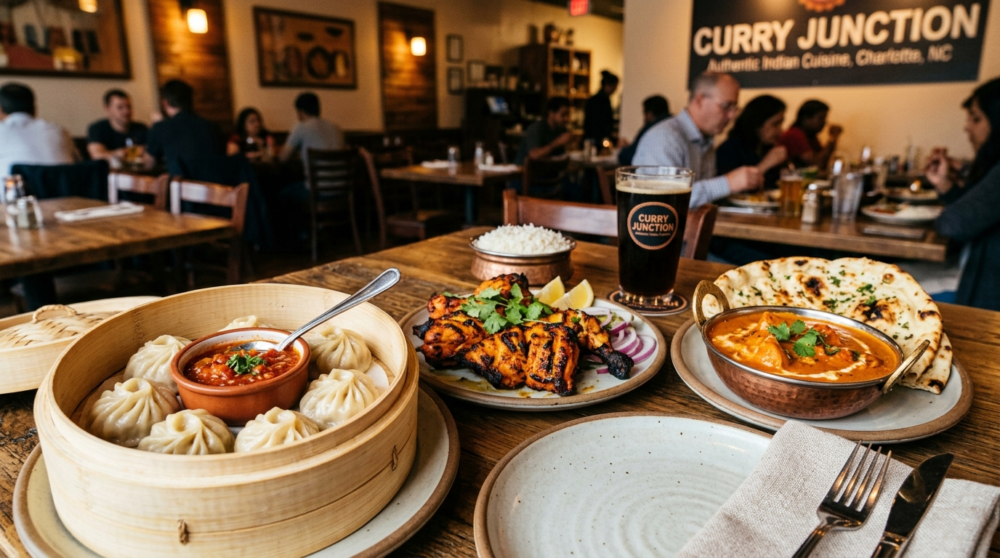

Hand-Pleated Himalayan Momos
Steamed dumplings filled with spiced minced chicken or mountain herbs, served with homemade roasted sesame tomato chutney.
Discover Momo Craft →South Charlotte's premier Himalayan and Royal Indian culinary destination at 8200 Providence Rd (Arboretum). Serving hand-pleated steamed momos, clay-oven tandoori grills, rich chicken tikka masala, and garlic butter naan.

Hand-pleated Himalayan recipes, clay-oven tandoori roasting, and slow-simmered rich Indian curries.
Steamed dumplings filled with spiced minced chicken or mountain herbs, served with homemade roasted sesame tomato chutney.
Discover Momo Craft →Yogurt-marinated chicken leg quarters & spiced lamb kebabs roasted over intense mesquite charcoal flame in authentic clay tandoors.
Explore Tandoori Roasting →Rich chicken tikka masala simmered with fenugreek & tomatoes, fiery lamb vindaloo, and Himalayan goat curry with fresh garlic naan.
View Full Royal Menu →